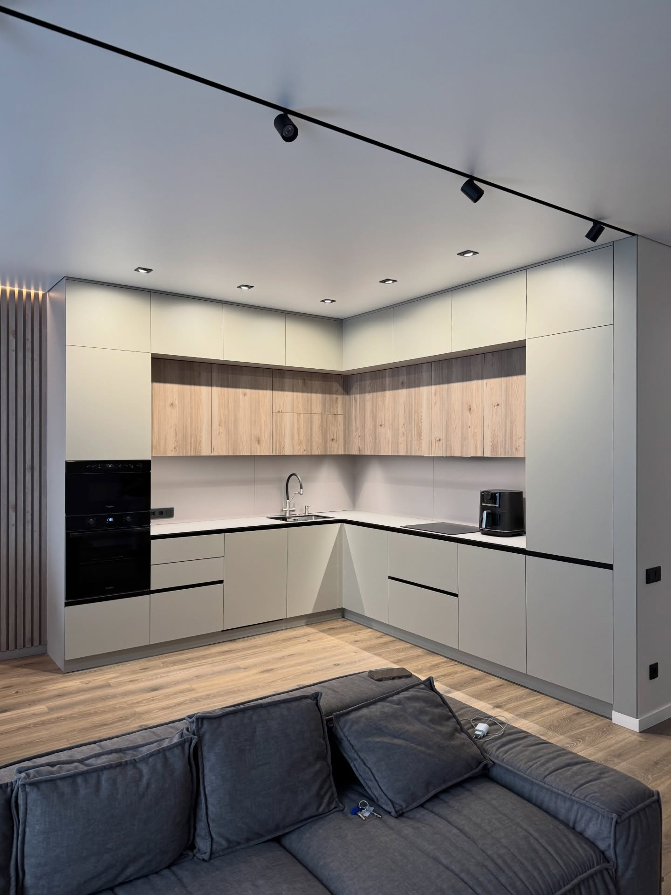

МЕБЛІ НА ЗАМОВЛЕННЯ · ОДЕСА
Ваша кухня.
Ваш характер.
Ваша історія.
Місце для ранкової кави, довгих розмов
і звичайного щастя. Створене під вас.
Почнемо з безкоштовного заміру в Одесі.
Андрій НаумовКухні та комплексне меблювання квартир

РЕАЛІЗОВАНИЙ ПРОЄКТ
01 / 03Тепло дерева. Чистота ліній.
Продумано зовні.
Надійно всередині.